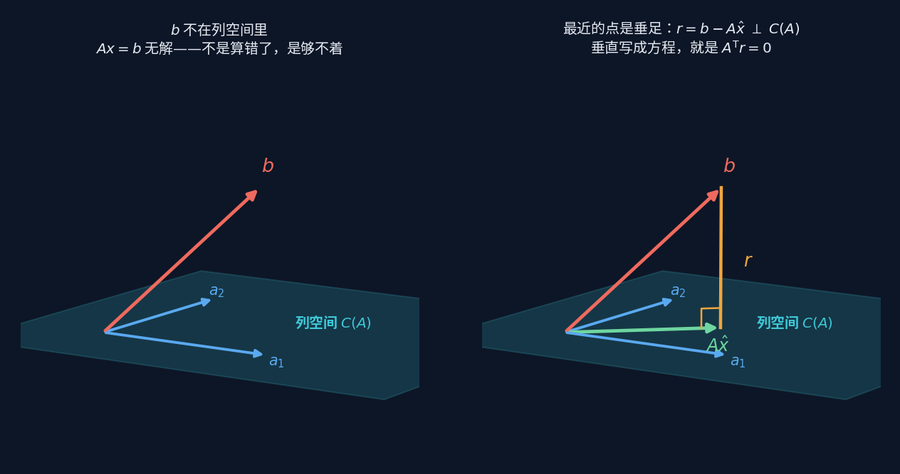
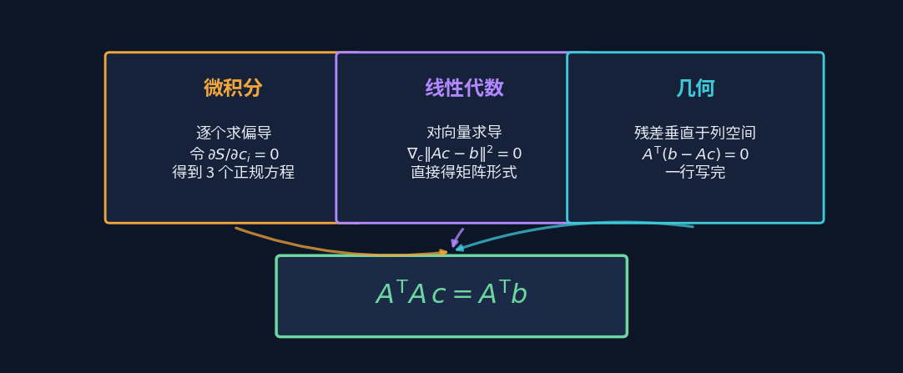
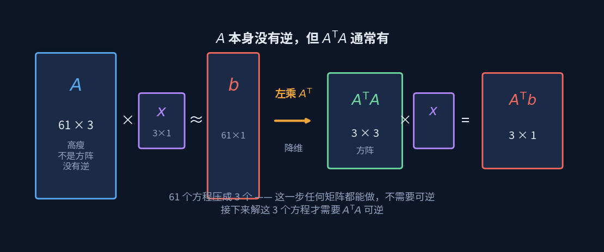

拟合与最小二乘
Fitting & Least Squares
当 $\mathbf b$ 够不着列空间，方程无解——不是算错了，是本来就到不了。
那就退而求其次：在够得着的范围里，找离它最近的那个点。
上一板块讲过：$A\mathbf x=\mathbf b$ 有解，当且仅当 $\mathbf b$ 落在列空间里。
这一板块处理的正是"落不进去"的情况——而现实中的数据，几乎总是落不进去。
问题从哪来
舵机标定那一页量了 61 个点，要拟合一条三阶曲线，也就是求 4 个系数。 写成方程组就是 61 个方程、4 个未知数。
方程比未知数多得多，这叫超定。除非 61 个点恰好严丝合缝地落在同一条三次曲线上—— 有测量噪声、有机械回差，这不可能——否则无解。
但"无解"显然不是我们要的答案。舵机还得转，固件里那个函数还得写出来。 所以问题要换个问法：既然到不了 $\mathbf b$，那在够得着的地方，哪一点离它最近？
最近的点，是垂足

左图：$\mathbf b$ 悬在列空间外面，怎么调 $\mathbf x$ 都够不着。
右图：列空间里离 $\mathbf b$ 最近的点，是 $\mathbf b$ 在这张平面上的垂足。
为什么是垂足？因为如果残差 $\mathbf r=\mathbf b-A\hat{\mathbf x}$ 不垂直于列空间， 那它一定还有一个分量躺在列空间里——顺着那个方向再挪一点，就能更近。 挪到不能再挪的时候，残差就只剩垂直分量了。
整条推理链，五步
$A\mathbf x\approx\mathbf b$ $\;\to\;$ 最近点是投影 $A\hat{\mathbf x}=\mathrm{proj}_{C(A)}\mathbf b$ $\;\to\;$ 残差 $\mathbf r=\mathbf b-A\hat{\mathbf x}$ $\;\to\;$ $\mathbf r\perp C(A)$，也就是 $\mathbf r$ 垂直于 $A$ 的每一个列 $\;\to\;$ 写成矩阵就是 $A^{\mathsf T}\mathbf r=\mathbf 0$
最后一步代入 $\mathbf r=\mathbf b-A\hat{\mathbf x}$：
正规方程 Normal Equations
"垂直"这个几何条件，一路化成了一个可以直接解的方程组。 而"垂直"的代数形式就是点积为零——第一板块讲的那件事，在这里兑现了。
三条路，同一个式子
这个式子不止一种推法。三条完全不同的路，走到同一个终点：

| 视角 | 怎么做 | 好处 | 代价 |
|---|---|---|---|
| 微积分 | 把残差平方和 $S$ 对每个系数求偏导，令导数为零 | 只用高中导数，人人能跟 | 系数一多就写不动 |
| 线性代数 | 对整个向量求导 $\nabla_{\mathbf x}\lVert A\mathbf x-\mathbf b\rVert^2=0$ | 一步得矩阵形式，不管几个系数 | 要先接受向量求导的记号 |
| 几何 | 残差垂直于列空间 | 一行写完，而且看得见 | 要先理解列空间 |
三条路殊途同归这件事本身就值得留意：当一个式子能从毫不相干的三个方向推出来， 它多半抓住了某种本质，而不是某种技巧。
可是 A 没有逆啊
这里有个几乎人人都会卡住的地方。既然要解 $A\mathbf x=\mathbf b$， 为什么不直接两边乘 $A^{-1}$？
因为 $A$ 是 61×4 的，不是方阵，根本没有逆。 "逆"意味着能把变换原样倒回去，而 $A$ 把 4 维压进了 61 维空间里的一张 4 维薄片—— 61 维里绝大多数向量它根本够不着，谈何倒回去。

正规方程的高明之处，是把这件事拆成两步：
第一步：$A^{\mathsf T}$ 负责把方程变少
左乘 $A^{\mathsf T}$，61 个方程压成 4 个。 这一步任何矩阵都能做，不需要可逆——它只是把每个列向量分别和残差做点积。
第二步：$(A^{\mathsf T}A)^{-1}$ 负责把系数解出来
压完之后 $A^{\mathsf T}A$ 是 4×4 的方阵，这一步才需要可逆。 只要 $A$ 的列线性无关，它就可逆。
$A^{\mathsf T}$ 负责把方程变少，$(A^{\mathsf T}A)^{-1}$ 负责把系数解出来。
$A$ 本身没有逆，所以从来就没有"撤销整个 61 维变换"这回事。
两步合起来写成一个符号，叫伪逆 $A^{+}=(A^{\mathsf T}A)^{-1}A^{\mathsf T}$。 名字里的"伪"就是这个意思：它不是真的逆，只是在够得着的范围里做了最好的还原。
矩阵不是向量
顺带说一个容易含糊的地方。$A$ 是个矩阵，不是向量，也不是一堆散数—— 它是一叠列向量摞在一起。

整条吐司是矩阵 $A$。竖着切一刀得到一片，那是一个列向量。 这些片能张成的空间就是列空间，而真正独立的片数就是秩—— 如果有两片一模一样，它俩只算一片。
还有一处值得提醒：$A\mathbf x=\mathbf 0$ 里那个 $\mathbf 0$ 不是数字零，是零向量。它代表 $m$ 个等号，每个右边都是 0， 不是"最后那一堆加起来等于 0"这么一句。这个区别在判断线性相关时特别要紧。
四个概念
残差 Residual
- 是什么
- $\mathbf r=\mathbf b-A\hat{\mathbf x}$，实测值与拟合值之差。
- 在量什么
- 模型没能解释的那一部分。它永远垂直于列空间—— 如果不垂直，说明还没拟合到最好。
- 结构位置
- $\mathbf b$ 被劈成两半：一半在列空间里（模型能解释的）， 一半垂直于列空间（模型解释不了的）。这个分解是唯一的。
- 为零意味着
- 数据恰好落在模型上，$\mathbf b$ 本来就在列空间里。现实中几乎不会发生。
超定 Overdetermined
- 是什么
- 方程个数多于未知数个数。舵机标定是 61 个方程、4 个未知数。
- 在量什么
- 数据比模型"富余"。富余不是坏事——正是这些冗余在对抗噪声。
- 结构位置
- 与之相对的是恰定（方程数等于未知数，唯一解） 和欠定（方程数少于未知数，无穷多解）。 S 曲线那个 6 条件 6 系数就是恰定。
- 反过来说
- 数据点如果少于系数个数，拟合出来的曲线会完美穿过每个点—— 但那不是拟合，那是过拟合。
正规方程 Normal Equations
- 是什么
- $A^{\mathsf T}A\hat{\mathbf x}=A^{\mathsf T}\mathbf b$。名字里的 "normal" 是"法向、垂直"的意思，不是"正常"。
- 在量什么
- 把"残差垂直于每一列"这 $n$ 个条件，打包成一个方程组。
- 结构位置
- $A^{\mathsf T}A$ 就是上一板块那个格拉姆矩阵，对称、半正定。 $\mathbf x^{\mathsf T}A^{\mathsf T}A\mathbf x=\lVert A\mathbf x\rVert^2$ ——它存在的理由就是这个。
- 解不唯一意味着
- $A$ 的列线性相关，$A^{\mathsf T}A$ 不可逆。 数据里有冗余的自变量，数值库会给出最小范数的那一个解。
条件数 Condition Number
- 是什么
- 衡量一个矩阵"接近奇异"的程度。数越大，解对输入扰动越敏感。
- 为什么要提
- 因为 $A^{\mathsf T}A$ 的条件数是 $A$ 的平方。 原本还算稳的问题，乘完转置之后可能就不稳了。
- 实践建议
- 别真去算 $(A^{\mathsf T}A)^{-1}$。数值库解最小二乘用的是 QR 分解或 SVD，
绕开显式求逆，稳定得多。NumPy 里就是
np.linalg.lstsq。 - 怎么察觉
- 如果拟合系数在数据轻微变动时大幅跳变，多半是这个原因， 不是数据的问题。舵机标定那页三阶系数跨了八个数量级，就该留意。
回到舵机
舵机标定那一页的三阶多项式，正是这么解出来的：设计矩阵 $A$ 是 61×4， 每行是 $[1,\ r,\ r^2,\ r^3]$，$\mathbf b$ 是 61 个实测角度。 解 $A^{\mathsf T}A\hat{\mathbf c}=A^{\mathsf T}\mathbf b$，得到四个系数，贴进固件。
那页还做了一件这一板块该做的事——看残差。 拟合完不看残差，等于只知道"最好能到这么好"，却不知道"为什么不能更好"。 结果发现残差 0.62° 是测量噪声底的四倍，而机械回差 2.07° 又是残差的三倍多。
最小二乘给你的是"在这个模型下最好的解"，
不是"这个问题最好的解"。模型选错了，最小二乘会一丝不苟地给你一个最优的错误答案。
换成神经网络会怎样

同一组数据，最小二乘一步解出 0.621°， 小神经网络梯度下降三万轮追到 0.615°。几乎打平。
差别在于：当你知道曲线该长什么样（电位器分压特性本来就是低阶光滑的），
把形状写进模型远比让网络自己猜划算。网络的价值在你不知道形状的场合。
展开见 → 神经网络
完整推导
页面上是骨架。完整版包含三个视角的逐步推导、$A^{\mathsf T}A$ 的性质证明、 条件数与数值稳定性、以及"为什么 $A$ 没有逆却能解出系数"的完整链条。
请输入友情码
Enter the friendship code
线索：首页那句话是谁说的？填他的姓，拼音或英文都行。
Hint: who said the line on the homepage? His surname will do.
不对，再想想 Not quite — try again